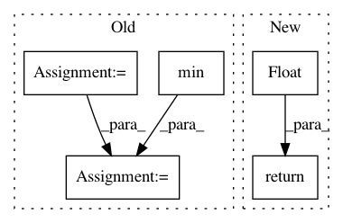

8d9e7975d0bf840b8061b7a60ef6385fd9a2fa5a,syft/workers/static_fl_worker.py,StaticFLWorker,_get_upload_speed,#StaticFLWorker#Any#Any#,111
Before Change
upload_speed = 64 * 1024 / time_taken // speed in KBps
speed_history.append(upload_speed)
if len(speed_history) % CHECK_SPEED_EVERY == 0:
avg = sum(speed_history) / len(speed_history)
deviation = avg - min(speed_history)
if (deviation < 20) and (avg > 0):
break
if len(speed_history) == 0:
return -1
After Change
speed_history.append(new_speed)
if len(speed_history) == 0:
return float("inf")
else:
avg_speed = sum(speed_history) / len(speed_history)
return avg_speed
In pattern: SUPERPATTERN
Frequency: 3
Non-data size: 5
Instances
Project Name: OpenMined/PySyft
Commit Name: 8d9e7975d0bf840b8061b7a60ef6385fd9a2fa5a
Time: 2020-07-10
Author: hericles.me@gmail.com
File Name: syft/workers/static_fl_worker.py
Class Name: StaticFLWorker
Method Name: _get_upload_speed
Project Name: OpenMined/PySyft
Commit Name: 8d9e7975d0bf840b8061b7a60ef6385fd9a2fa5a
Time: 2020-07-10
Author: hericles.me@gmail.com
File Name: syft/workers/static_fl_worker.py
Class Name: StaticFLWorker
Method Name: _get_download_speed
Project Name: nilearn/nilearn
Commit Name: 3daedc17ddab948752f3d6b90e56b177ea77ec42
Time: 2014-02-26
Author: virgile.fritsch@gmail.com
File Name: nilearn/mass_univariate/permuted_least_squares.py
Class Name:
Method Name: permuted_ols